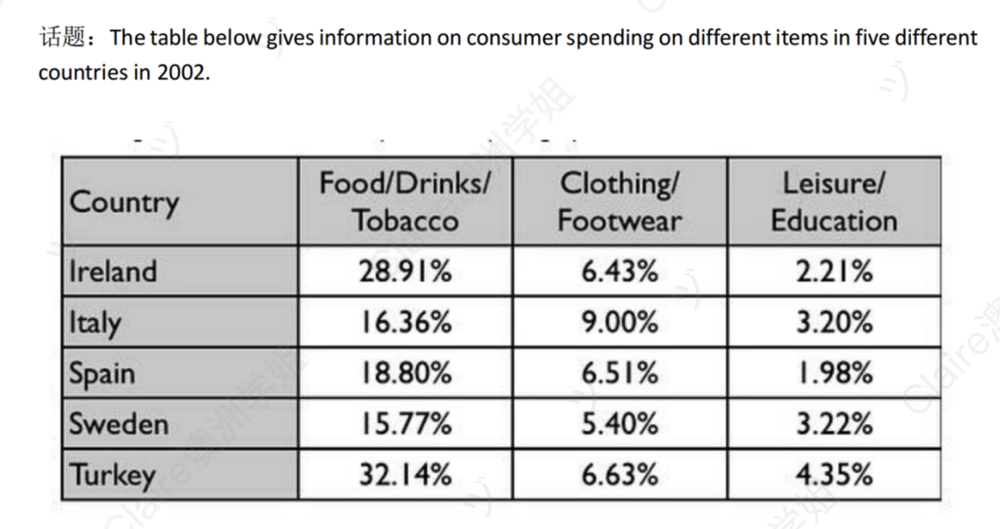

Consumer Spending on Different Items in Five Countries (2002)
静态类 表格 修改日期：2026-04-18
| 评分维度 | 修改前 | 修改后 | 变化 | 说明 |
|---|---|---|---|---|
| Task Achievement (TA) | 5.0 | 7.0 | +2.0 | 修正"seven types"和"all three categories"两处事实错误；Overview 准确概括最大/最小类别与 Turkey 的双类领先；Italy 在 Clothing/Footwear 的极值特征明确呈现；完整保留用户所有数据点。 |
| Coherence and Cohesion (CC) | 5.5 | 7.0 | +1.5 | 修复残句和粘连句；保留并优化用户原本的 When it comes to / By contrast / As for / Regarding / Moreover 衔接词系统；数据按"领头 → 末尾 → 中间"的逻辑呈现。 |
| Lexical Resource (LR) | 5.0 | 7.0 | +2.0 | 使用 accounted for, largest proportion, stood at, fell in between...respectively, ranked first, whereas, received the smallest share 等占比/对比类地道搭配。 |
| Grammatical Range and Accuracy (GRA) | 4.5 | 7.0 | +2.5 | 零语法错误；句式多样化（while 对比、破折号同位语、respectively 副词、whereas 从句、followed by 分词短语、leading 分词补充状语）。 |
题目原文：The table below gives information on consumer spending on different items in five different countries in 2002.
Summarise the information by selecting and reporting the main features, and make comparisons where relevant.

The table illustrates various items and statistic data on consumer spending, including five different countries and seven types of categories in 2002.
22 wordsOverall, it is clear that food, drinks and tobacco held the largest portion among all categories in every countries, while the smallest share went to leisure and education. Notably, Turkey citizens spent considerably more on all three categories than those in other nations.
43 wordsWhen it comes to Food, drinks and tobacco, Turkey recorded the highest counts among the five nations at 32.14%, followed by Ireland at nearly 29%. By contrast, Sweden had the lowest figures, with a total 15.77%, while Italy and Spain had similar spending at 16.36% and 18.80% of its total expenditure. As for clothing and footwear, most countries were at a broadly close level, at around 6%, while Italy ranked first at 9%.
73 wordsRegarding leisure and education, which was the least popular types with the minimal percentage of spending in all five countries. Turkey still led with 4.35%, conversely, Spain had the smallest at just 1.98%. Moreover, the remaining countries, namely Ireland, Italy and Sweden, spent a similar percentage, at roughly 3%.
49 words开头段（Introduction / Paraphrase）
原因：修正 "seven" 事实错误，删除冗余表达，保留用户的 "different" 修饰词，句式与范文 "The table illustrates..." 模板保持一致。
概述段（Overview）⚠️ 最关键
原因：保留用户原句 "Overall, it is clear that"（来自范文模板）和核心对比 "spent considerably more than the other nations"，使用 accounted for / received the smallest share 两个占比搭配，修正 "all three" → "two of the three" 的事实错误。
主体段一（Body Paragraph 1）— Food/Drinks/Tobacco 和 Clothing/Footwear
原因：完整保留用户的 "When it comes to... As for..." 衔接词系统、"among the five nations"、"of their total expenditure" 等信息点，修正所有语法和事实错误，使用 stood at / fell in between / ranked first 等地道搭配。
主体段二（Body Paragraph 2）— Leisure/Education
原因：修复残句和粘连句两处严重语法问题；完整保留用户原文的 "with the smallest percentage of spending in all five countries"、"Moreover"、"namely" 等所有信息点和衔接词；仅在句式（破折号同位语）和个别词汇层面升级。
内容与结构建议
修改统计
本次修改的核心工作：(1) 修正两处重大事实错误（"seven types"、"all three categories"）；(2) 重写残句和粘连句，恢复主体段二的语法完整性；(3) 引入表格题专用的占比/对比高分搭配（account for, largest proportion, stood at, fell in between, ranked first, whereas）；(4) 完整保留用户原文的所有信息点、分类逻辑、衔接词系统（When it comes to / By contrast / As for / Regarding / Moreover / namely / of their total expenditure / spent considerably more than the other nations 全部保留）——用户能清晰感知每处改进都是在原文基础上的精修，而非被重写的陌生作文。
The table illustrates the percentage of consumer spending on three different categories of items across five different countries in 2002.
20 wordsOverall, it is clear that food, drinks and tobacco accounted for the largest proportion of spending among all categories in every country, while leisure and education received the smallest share. Notably, Turkey spent considerably more than the other nations, leading in two of the three categories.
46 wordsWhen it comes to food, drinks and tobacco, Turkey recorded the highest percentage among the five nations at 32.14%, followed by Ireland at nearly 29%. By contrast, Sweden had the lowest figure at just 15.77%, while Italy and Spain fell in between at 16.36% and 18.80% of their total expenditure respectively. As for clothing and footwear, most countries stood at a broadly close level of around 6%, whereas Italy ranked first at 9%.
73 wordsRegarding leisure and education, this was the least popular category, with the smallest percentage of spending in all five countries. Turkey still led with 4.35%, whereas Spain had the smallest proportion at just 1.98%. Moreover, the remaining countries — namely Ireland, Italy and Sweden — spent a similar percentage of roughly 3%.
50 words